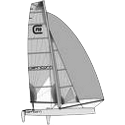
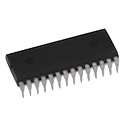
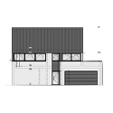
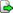

<div class="orbit menu">
  <div class="orbit info">
    <h1>Hello World</h1>
    You revolve around me ;-)<br>
    Pick a topic...    
  </div>

  <a href="About/">
    <span style="display:none;"><li>About me</li></span>
    
  </a>
  
  <a href="Koken/">
    <span style="display:none;"><li>Koken (Cooking)</li></span>
    
  </a>

  <a href="Zeilen/">
    <span style="display:none;"><li>Zeilen (Sailing)</li></span>
    
  </a>

  <a href="IT/">
    <span style="display:none;"><li>IT (Anything Information Technology related)</li></span>
    
  </a>

  <a href="Embedded/">
    <span style="display:none;"><li>Embedded (Systems)</li></span>
    
  </a>
  
  <a href="Fotografie/">
    <span style="display:none;"><li>Fotografie (Photography)</li></span>
    
  </a>
    
  <a href="http://eline.vg">
    <span style="display:none;"><li>My daughter Eline</li></span>
    
  </a>
  
  <a href="http://arjen.vg">
    <span style="display:none;"><li>My son Arjen</li></span>
    
  </a>
  
  <a href="http://35.peyerstraat.be">
    <span style="display:none;"><li>Peyerstraat 35 (our /home)</li></span>
    
  </a>
  
</div>

<div class="updates">
  <h3>Updates...</h3>
  <div id="twitter" class="twitter"></div>
</div>

<script>
function processUrls(text) {
  var exp = /(\b(https?|ftp|file):\/\/[-A-Z0-9+&@#\/%?=~_|!:,.;]*[-A-Z0-9+&@#\/%=~_|])/ig;
  return text.replace(exp,'<a href="$1"></a>'); 
}

function processTwitter(tweets) {
  html  = "";
  count = 0; maxCount = 5; index=0;
  while( count < maxCount && index<tweets.length) {
    tweet = tweets[index++];
    if( tweet.in_reply_to_user_id == null ) {
      count++;
      html += '<div class="tweet"><span class="when">'
           +    new Date(Date.parse(tweet.created_at)).toDateString()
           +  '</span><br>'
           +  '<span class="content">' + processUrls(tweet.text) + '</span></div>';
    }
  }
  document.getElementById('twitter').innerHTML = html;
}
</script>
<script src="https://api.twitter.com/1/statuses/user_timeline/Christophe_VG.json?callback=processTwitter"></script>
